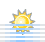

Perfect Catch @ Port Macquarie, NSW
Port Macquarie, NSW – 31/07/2016 - 06/08/2016 Start End
Sun 31 Jul

Morning fog.
Max 21°C
Min 6°C
Max 21°C
Min 6°C
 14%
14%| Low | 12:33 am |
|---|---|
| 0.31 m | |
| High | 6:20 am |
| 1.07 m | |
| Low | 12:04 pm |
| 0.25 m | |
| High | 6:51 pm |
| 1.54 m |
Mon 1 Aug
Sunny.
Max 23°C
Min 6°C
Max 23°C
Min 6°C
7%| Low | 1:28 am |
|---|---|
| 0.24 m | |
| High | 7:17 am |
| 1.10 m | |
| Low | 12:58 pm |
| 0.23 m | |
| High | 7:41 pm |
| 1.58 m |
Tue 2 Aug
Shower or two.
Max 20°C
Min 8°C
Max 20°C
Min 8°C
 3%
3%Perfect Catch Day
| Low | 2:15 am |
|---|---|
| 0.20 m | |
| High | 8:07 am |
| 1.12 m | |
| Low | 1:46 pm |
| 0.21 m | |
| High | 8:26 pm |
| 1.59 m |
Wed 3 Aug
Possible shower.
Max 17°C
Min 5°C
Max 17°C
Min 5°C
1%Perfect Catch Day
| Low | 2:57 am |
|---|---|
| 0.19 m | |
| High | 8:51 am |
| 1.14 m | |
| Low | 2:32 pm |
| 0.22 m | |
| High | 9:08 pm |
| 1.57 m |
Thu 4 Aug
Possible shower.
Max 18°C
Min 6°C
Max 18°C
Min 6°C
1%Perfect Catch Day
| Low | 3:36 am |
|---|---|
| 0.19 m | |
| High | 9:32 am |
| 1.15 m | |
| Low | 3:15 pm |
| 0.24 m | |
| High | 9:46 pm |
| 1.52 m |
Fri 5 Aug
Shower or two.
Max 18°C
Min 7°C
Max 18°C
Min 7°C
4%| Low | 4:13 am |
|---|---|
| 0.21 m | |
| High | 10:13 am |
| 1.16 m | |
| Low | 3:57 pm |
| 0.28 m | |
| High | 10:23 pm |
| 1.45 m |
Sat 6 Aug
Possible shower.
Max 19°C
Min 7°C
Max 19°C
Min 7°C
8%| Low | 4:48 am |
|---|---|
| 0.24 m | |
| High | 10:51 am |
| 1.15 m | |
| Low | 4:38 pm |
| 0.33 m | |
| High | 10:59 pm |
| 1.36 m |